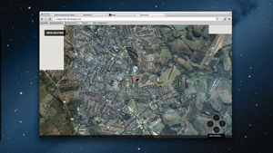

Geolocalização
É uma técnica para descobrir onde as pessoas estão, baseada na localização do computadorque esta pessoa está utilizando. Computador pode ser um smart phone, tablet, desktop ou outro dispositivo móvel.
Segurança
O usuário tem que permitir o uso de sua localização através do navegador, então você não pode usá-la para espionar os seus visitantes sem o seu conhecimento.
Geolocalização IP
É o método usado pela maioria dos navegadores web em computadores. Através de consultas whois e serviços de localização de IP, vai determinar a cidade ou região em que você está.

Triangulação GPRS
Dispositivos conectados a uma rede de celulares e sem um GPS, ou com o GPS desligado, podem determinar sua posição pela triângulação das antenas GPRS próximas. É bem mais preciso que o método baseado em IP, vai mostrar em que parte do bairro você está.
GPS
É o método mais preciso. Em condições ideais, a margem de erro é de apenas 5 metros.
Como obter a posição atual do usuário ?
## Através da função getCurrentPosition
navigator.geolocation.getCurrentPosition(onSucess,onError,configuration);
onsucess ?
## Função de callback que recebe a posição
- latitude
- longitude
- accuracy
- altitude
- altitudeAccuracy
- heading
- speed (se estiver usando watchPosition)
onerror ?
## Função de callback que recebe o objeto de erro
- Permissão negada
- Posição indisponível
- Timeout
- Erro desconhecido
configuration ?
## Objeto de configuração
- enableHighAccuracy
- timeout
- maximumAge
## Rastrear continuamente a posição
watchPosition
## Possui a mesma assinatura que getCurrentPosition
navigator.geolocation.watchPosition(onSucess,onError,configuration);
Exemplo

Fonte: HTML5 e CSS3 Develop with Tomorrow’s Standards Today – Brian P. Hogan
http://tableless.com.br/html5